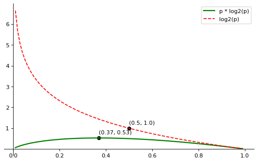
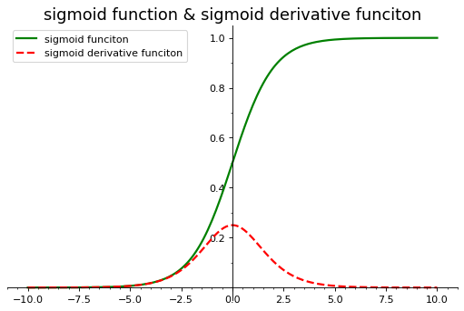
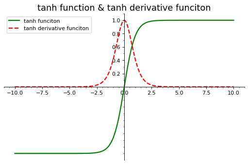
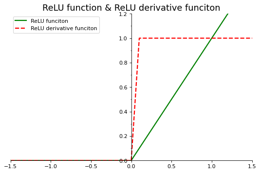
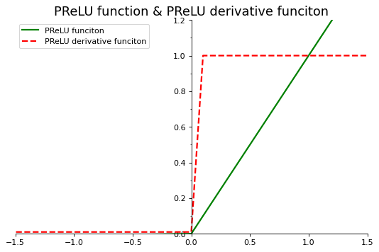
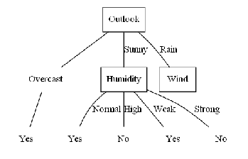

Python-人工智能数学基础11
目录
11 熵与激活函数
11.1 熵和信息熵
11.1 熵的概念
【毕导】你会点进这个视频，并一脸懵逼地出去，而这一切已被物理规律注定了
11.2 信息熵的概念
如果 对一条信息越难预测$\to$信息量就越高$\to$信息熵就越高
$\color{Purple}{H(P _ 1, P _ 2,…, P _ n)} = - \lambda\color{Green}{\Sigma^n _ {i=1}}\color{Blue}{P _ i} \color{Red}{\log(P _ i)}$
信息熵等于对单个符号对应的信息量(不确定性), 乘以它出现的概率, 再求和(单个符号不确定性的平均值)
11.1.3 应用Python函数库计算信息熵
(1) 均匀分布事件的不确定性计算和信息熵计算
|
[0.01 0.02 0.03 0.04 0.05 0.06 0.07 0.08 0.09 0.1 0.11 0.12 0.13 0.14
0.15 0.16 0.17 0.18 0.19 0.2 0.21 0.22 0.23 0.24 0.25 0.26 0.27 0.28
0.29 0.3 0.31 0.32 0.33 0.34 0.35 0.36 0.37 0.38 0.39 0.4 0.41 0.42
0.43 0.44 0.45 0.46 0.47 0.48 0.49 0.5 0.51 0.52 0.53 0.54 0.55 0.56
0.57 0.58 0.59 0.6 0.61 0.62 0.63 0.64 0.65 0.66 0.67 0.68 0.69 0.7
0.71 0.72 0.73 0.74 0.75 0.76 0.77 0.78 0.79 0.8 0.81 0.82 0.83 0.84
0.85 0.86 0.87 0.88 0.89 0.9 0.91 0.92 0.93 0.94 0.95 0.96 0.97 0.98
0.99]
概率值为0.37时信息熵分量(单个符号的不确定性)达到最大值0.5307290449339367

$f(x)=xlog2(x)$
$f’(x)=\frac{lnx+1}{ln2}$
$f’(x)=0\to x=\frac{1}{e}\approx 0.37$
(选择到某一个事件的)概率不断增加时, 事情的状态越来越确定, 不确定性越来越小, (单个符号不确定性的平均值)信息熵也越来越小
对于两个状态的均匀分布(两种状态对应的概率都为0.5, 如抛硬币), 信息熵为1
当概率变为1时, 事情已经完全确定, 结果不会有任何变化, 此时信息熵变为0
熵可以应用到分类任务中, 熵值越低分类效果越好
熵可以衡量两个指标对结果的影响大小, 熵值越小的指标对结果的影响更大
(2) 均匀分布的信息熵和非均匀分布的信息熵
对同一个随机事件, 均匀分布时的信息熵是最大的
|
非均匀分布的概率分布: [0.01567749 0.02239642 0.07950728 0.10302352 0.11422172 0.11870101
0.13549832 0.20044793 0.21052632]
非均匀分布对应的信息熵: 2.8962045966225145
均匀分布的信息熵: 3.1699250014423126
11.2 激活函数
11.2 激活函数的概念
每一个神经元有一个激活函数, 作用于本神经元的输入, 产生输出如下:
$f(x)=f(\Sigma _ i \omega _ i x _ i + b)$
如果没有激活函数或激活函数是线性的, 即$f(x)=x$, 网络计算能力就相当有限.
使用非线性激活函数, 可以将线性作用变成非线性作用, 以获得描述复杂的表单数据, 具有学习复杂事务的能力
11.2.2 常见的几种激活函数
Sigmoid 函数
$f(x)=\frac{1}{1+e^{-x}}$
$f’(x)=f(x)\left[ 1-f(x) \right]=\frac{1}{e^x(\frac{1}{e^x}+1)^2}$
|
X: [-10. -9.9 -9.8 -9.7 -9.6 -9.5 -9.4 -9.3 -9.2 -9.1 -9. -8.9
-8.8 -8.7 -8.6 -8.5 -8.4 -8.3 -8.2 -8.1 -8. -7.9 -7.8 -7.7
-7.6 -7.5 -7.4 -7.3 -7.2 -7.1 -7. -6.9 -6.8 -6.7 -6.6 -6.5
-6.4 -6.3 -6.2 -6.1 -6. -5.9 -5.8 -5.7 -5.6 -5.5 -5.4 -5.3
-5.2 -5.1 -5. -4.9 -4.8 -4.7 -4.6 -4.5 -4.4 -4.3 -4.2 -4.1
-4. -3.9 -3.8 -3.7 -3.6 -3.5 -3.4 -3.3 -3.2 -3.1 -3. -2.9
-2.8 -2.7 -2.6 -2.5 -2.4 -2.3 -2.2 -2.1 -2. -1.9 -1.8 -1.7
-1.6 -1.5 -1.4 -1.3 -1.2 -1.1 -1. -0.9 -0.8 -0.7 -0.6 -0.5
-0.4 -0.3 -0.2 -0.1 0. 0.1 0.2 0.3 0.4 0.5 0.6 0.7
0.8 0.9 1. 1.1 1.2 1.3 1.4 1.5 1.6 1.7 1.8 1.9
2. 2.1 2.2 2.3 2.4 2.5 2.6 2.7 2.8 2.9 3. 3.1
3.2 3.3 3.4 3.5 3.6 3.7 3.8 3.9 4. 4.1 4.2 4.3
4.4 4.5 4.6 4.7 4.8 4.9 5. 5.1 5.2 5.3 5.4 5.5
5.6 5.7 5.8 5.9 6. 6.1 6.2 6.3 6.4 6.5 6.6 6.7
6.8 6.9 7. 7.1 7.2 7.3 7.4 7.5 7.6 7.7 7.8 7.9
8. 8.1 8.2 8.3 8.4 8.5 8.6 8.7 8.8 8.9 9. 9.1
9.2 9.3 9.4 9.5 9.6 9.7 9.8 9.9 10. ]

能够把输入的连续实值压缩到[0, 1]区间上有助于输出值的收敛
会出现梯度消失情况, $\lim _ {x\to \infty}f’(x) = 0$
非原点中心对称, 不利于下层的计算(可以直接-0.5?)
含有幂运算, 相对耗时较长
tanh函数
$f(x)=\frac{e^x - e^{-x}}{e^x + e^{-x}}$
$f’(x) = 1 - \tanh^2x$
|
X: [-10. -9.9 -9.8 -9.7 -9.6 -9.5 -9.4 -9.3 -9.2 -9.1 -9. -8.9
-8.8 -8.7 -8.6 -8.5 -8.4 -8.3 -8.2 -8.1 -8. -7.9 -7.8 -7.7
-7.6 -7.5 -7.4 -7.3 -7.2 -7.1 -7. -6.9 -6.8 -6.7 -6.6 -6.5
-6.4 -6.3 -6.2 -6.1 -6. -5.9 -5.8 -5.7 -5.6 -5.5 -5.4 -5.3
-5.2 -5.1 -5. -4.9 -4.8 -4.7 -4.6 -4.5 -4.4 -4.3 -4.2 -4.1
-4. -3.9 -3.8 -3.7 -3.6 -3.5 -3.4 -3.3 -3.2 -3.1 -3. -2.9
-2.8 -2.7 -2.6 -2.5 -2.4 -2.3 -2.2 -2.1 -2. -1.9 -1.8 -1.7
-1.6 -1.5 -1.4 -1.3 -1.2 -1.1 -1. -0.9 -0.8 -0.7 -0.6 -0.5
-0.4 -0.3 -0.2 -0.1 0. 0.1 0.2 0.3 0.4 0.5 0.6 0.7
0.8 0.9 1. 1.1 1.2 1.3 1.4 1.5 1.6 1.7 1.8 1.9
2. 2.1 2.2 2.3 2.4 2.5 2.6 2.7 2.8 2.9 3. 3.1
3.2 3.3 3.4 3.5 3.6 3.7 3.8 3.9 4. 4.1 4.2 4.3
4.4 4.5 4.6 4.7 4.8 4.9 5. 5.1 5.2 5.3 5.4 5.5
5.6 5.7 5.8 5.9 6. 6.1 6.2 6.3 6.4 6.5 6.6 6.7
6.8 6.9 7. 7.1 7.2 7.3 7.4 7.5 7.6 7.7 7.8 7.9
8. 8.1 8.2 8.3 8.4 8.5 8.6 8.7 8.8 8.9 9. 9.1
9.2 9.3 9.4 9.5 9.6 9.7 9.8 9.9 10. ]

关于原点中心对称, 收敛较好
存在梯度消失问题
含有幂运算, 相对耗时
ReLU函数
$f(x) = max(0, x)$
$f’(x) = \left\{\begin{matrix}
1,x>0
\\ 0,x\le0
\end{matrix}\right.$
|
X: [-10. -9.9 -9.8 -9.7 -9.6 -9.5 -9.4 -9.3 -9.2 -9.1 -9. -8.9
-8.8 -8.7 -8.6 -8.5 -8.4 -8.3 -8.2 -8.1 -8. -7.9 -7.8 -7.7
-7.6 -7.5 -7.4 -7.3 -7.2 -7.1 -7. -6.9 -6.8 -6.7 -6.6 -6.5
-6.4 -6.3 -6.2 -6.1 -6. -5.9 -5.8 -5.7 -5.6 -5.5 -5.4 -5.3
-5.2 -5.1 -5. -4.9 -4.8 -4.7 -4.6 -4.5 -4.4 -4.3 -4.2 -4.1
-4. -3.9 -3.8 -3.7 -3.6 -3.5 -3.4 -3.3 -3.2 -3.1 -3. -2.9
-2.8 -2.7 -2.6 -2.5 -2.4 -2.3 -2.2 -2.1 -2. -1.9 -1.8 -1.7
-1.6 -1.5 -1.4 -1.3 -1.2 -1.1 -1. -0.9 -0.8 -0.7 -0.6 -0.5
-0.4 -0.3 -0.2 -0.1 0. 0.1 0.2 0.3 0.4 0.5 0.6 0.7
0.8 0.9 1. 1.1 1.2 1.3 1.4 1.5 1.6 1.7 1.8 1.9
2. 2.1 2.2 2.3 2.4 2.5 2.6 2.7 2.8 2.9 3. 3.1
3.2 3.3 3.4 3.5 3.6 3.7 3.8 3.9 4. 4.1 4.2 4.3
4.4 4.5 4.6 4.7 4.8 4.9 5. 5.1 5.2 5.3 5.4 5.5
5.6 5.7 5.8 5.9 6. 6.1 6.2 6.3 6.4 6.5 6.6 6.7
6.8 6.9 7. 7.1 7.2 7.3 7.4 7.5 7.6 7.7 7.8 7.9
8. 8.1 8.2 8.3 8.4 8.5 8.6 8.7 8.8 8.9 9. 9.1
9.2 9.3 9.4 9.5 9.6 9.7 9.8 9.9 10. ]

解决梯度消失的问题
计算速度快
非原点对称, 会影响收敛速度(但是比Sigmoid和tanh快)
输入值小于0时, 永远不会被激活
Leaky ReLU (PReLU)
解决ReLU算法在x轴负方向为0可能导致部分神经元无法激活的问题
理论上具有ReLU的所有优点
$f(x)=max(\alpha x, x)$($\alpha$通常取0.01)
$f(x)=max(0.01x, x)$
$f(x)=\left\{\begin{matrix}
1,x>0
\\ 0.01,x\le0
\end{matrix}\right.$
|
X: [-10. -9.9 -9.8 -9.7 -9.6 -9.5 -9.4 -9.3 -9.2 -9.1 -9. -8.9
-8.8 -8.7 -8.6 -8.5 -8.4 -8.3 -8.2 -8.1 -8. -7.9 -7.8 -7.7
-7.6 -7.5 -7.4 -7.3 -7.2 -7.1 -7. -6.9 -6.8 -6.7 -6.6 -6.5
-6.4 -6.3 -6.2 -6.1 -6. -5.9 -5.8 -5.7 -5.6 -5.5 -5.4 -5.3
-5.2 -5.1 -5. -4.9 -4.8 -4.7 -4.6 -4.5 -4.4 -4.3 -4.2 -4.1
-4. -3.9 -3.8 -3.7 -3.6 -3.5 -3.4 -3.3 -3.2 -3.1 -3. -2.9
-2.8 -2.7 -2.6 -2.5 -2.4 -2.3 -2.2 -2.1 -2. -1.9 -1.8 -1.7
-1.6 -1.5 -1.4 -1.3 -1.2 -1.1 -1. -0.9 -0.8 -0.7 -0.6 -0.5
-0.4 -0.3 -0.2 -0.1 0. 0.1 0.2 0.3 0.4 0.5 0.6 0.7
0.8 0.9 1. 1.1 1.2 1.3 1.4 1.5 1.6 1.7 1.8 1.9
2. 2.1 2.2 2.3 2.4 2.5 2.6 2.7 2.8 2.9 3. 3.1
3.2 3.3 3.4 3.5 3.6 3.7 3.8 3.9 4. 4.1 4.2 4.3
4.4 4.5 4.6 4.7 4.8 4.9 5. 5.1 5.2 5.3 5.4 5.5
5.6 5.7 5.8 5.9 6. 6.1 6.2 6.3 6.4 6.5 6.6 6.7
6.8 6.9 7. 7.1 7.2 7.3 7.4 7.5 7.6 7.7 7.8 7.9
8. 8.1 8.2 8.3 8.4 8.5 8.6 8.7 8.8 8.9 9. 9.1
9.2 9.3 9.4 9.5 9.6 9.7 9.8 9.9 10. ]

11.3 综合案例——分类算法中信息熵的应用
用ID3分类算法, 按照信息熵的减少幅度来确定分类的方向
|
| Outlook | Temp. | Humidity | Wind | Decision | |
|---|---|---|---|---|---|
| Day | |||||
| 1 | Sunny | Hot | High | Weak | No |
| 2 | Sunny | Hot | High | Strong | No |
| 3 | Overcast | Hot | High | Weak | Yes |
| 4 | Rain | Mild | High | Weak | Yes |
| 5 | Rain | Cool | Normal | Weak | Yes |
| 6 | Rain | Cool | Normal | Strong | No |
| 7 | Overcast | Cool | Normal | Strong | Yes |
| 8 | Sunny | Mild | High | Weak | No |
| 9 | Sunny | Cool | Normal | Weak | Yes |
| 10 | Rain | Mild | Normal | Weak | Yes |
| 11 | Sunny | Mild | Normal | Strong | Yes |
| 12 | Overcast | Mild | High | Strong | Yes |
| 13 | Overcast | Hot | Normal | Weak | Yes |
| 14 | Rain | Mild | High | Strong | No |
| 名称 | 解释 |
|---|---|
| Day | 日期 |
| OutLook | 阴晴 |
| Temp. | 气温 |
| Humidity | 湿度 |
| Wind | 风力 |
| Decision | 目标列/标识列 |
(1) 数据集的信息熵的计算
$H(D)=-\Sigma^2 _ {k=1}\frac{|C _ k|}{|D|}\log _ 2 \frac{C _ k}{|D|}$
$= - \frac{|C _ {yes}|}{|D|}\log _ 2\frac{|C _ {yes}|}{|D|} - \frac{|C _ {no}|}{|D|} \log _ 2\frac{|C _ {no}|}{|D|}$
$|D|=14,|C _ {yes}|=9, |C _ {no}|=5$
$H(D)=-\frac{9}{14}\log _ 2 \frac{9}{14} - \frac{5}{14}\log _ 2 \frac{5}{14}= 0.940$
|
0.9402859586706311
(2) 对数据集进行分类之后的信息熵
按照某一属性A:
$H(D|A)=\Sigma^n _ {i=1}\frac{|D _ i|}{|D|}H(D _ i)=-\Sigma^n _ {i=1}\frac{|D _ i|}{|D|}\Sigma^K _ {k=1}\frac{|C _{ik}|}{|D _ i|}\log _2\frac{|D _{ik}|}{|D _ i|}$
针对某一属性A, 分类后不确定性减少, 由此产生的信息增益:
$g(D|A)=H(D)-H(D|A)$
属性Wind的信息熵:
$H(D|Wind)=\Sigma^n _ {i=1}\frac{|D _ i|}{|D|}H(D _ i)=\frac{|D _ {strong}|}{|D|}H(D _ {strong}) + \frac{|D _ {weak}|}{|D|}H(D _ {weak})$
对于Wind=Strong的数据集的信息熵:
$H(D _ {strong})=\Sigma^2 _ {k=1}\frac{|C _ {strong,k}|}{|D _ {strong}|}\log _ 2\frac{|C _ {strong,k}|}{|D _ {strong}|}$
$=-\frac{|C _ {strong,yes}|}{|D _ {strong}|}\log _ 2\frac{|C _ {strong,yes}|}{|D _ {strong}|}-\frac{|C _ {strong,no}|}{|D _ {strong}|}\log _ 2\frac{|C _ {strong,no}|}{|D _ {strong}|}$
$=-\frac{3}{6}\log _ 2\frac{3}{6}-\frac{3}{6}\log _ 2\frac{3}{6}=1$
|
1.0
|
0.8112781244591328
|
0.8921589282623617
$g(D|Wind)=H(D)-H(D|Wind)=0.940-0.892=0.048$
|
0.04812703040826949
同理,
$g(D|Outlook)=0.246$
$g(D|Temp)=0.029$
$g(D|Humidity)=0.151$
ID3算法是一种贪心算法，用来构造决策树。ID3算法起源于概念学习系统（CLS），以信息熵的下降速度为选取测试属性的标准，即在每个节点选取还尚未被用来划分的具有最高信息增益的属性作为划分标准，然后继续这个过程，直到生成的决策树能完美分类训练样例。ID3算法_百度百科
|
Collecting graphviz
Using cached graphviz-0.20-py3-none-any.whl (46 kB)
Installing collected packages: graphviz
Successfully installed graphviz-0.20
Note: you may need to restart the kernel to use updated packages.
|

不太会画, 先这样吧….